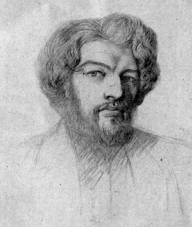
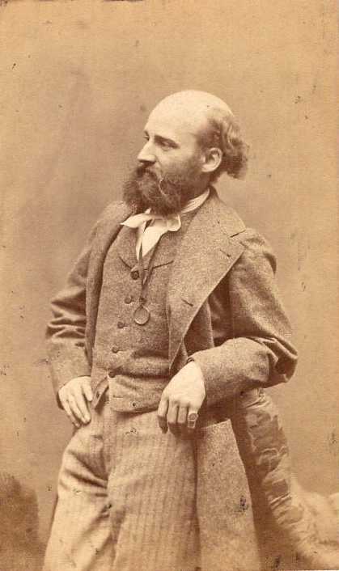
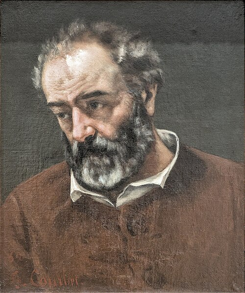

Salon of 1846
On Some Doubters
De quelques douteurs

Le doute revêt une foule de formes ; c’est un Protée qui souvent s’ignore lui-même. Ainsi les douteurs varient à l’infini, et je suis obligé de mettre en paquet plusieurs individus qui n’ont de commun que l’absence d’une individualité bien constituée.
Doubt assumes a multitude of forms; it is a Proteus that often does not know itself. Thus doubters vary without end, and I am obliged to bundle together several individuals who have nothing in common except the absence of a well-formed individuality.
Il y en a de sérieux et pleins d’une grande bonne volonté ; ceux-là, plaignons-les.
Some are serious and full of good will; let us pity them.
Ainsi M. Papety , que quelques-uns, ses amis surtout, avaient pris pour un coloriste lors de son retour de Rome, a fait un tableau d’un aspect affreusement désagréable, — Solon dictant ses lois ; — et qui rappelle, — peut-être parce qu’il est placé trop haut pour qu’on en puisse étudier les détails, — la queue ridicule de l’école impériale.
Thus M. Papety, whom some people—his friends above all—had taken for a colorist on his return from Rome, has made a picture of a horribly disagreeable appearance, Solon Dictating His Laws, which recalls—perhaps because it is hung too high for us to study the details—the ridiculous tail end of the Imperial school.
Voilà deux ans de suite que M. Papety donne, dans le même Salon, des tableaux d’un aspect tout différent.
For two years running M. Papety has shown, in the same Salon, pictures of completely different appearance.
M. Glaize compromet ses débuts par des œuvres d’un style commun et d’une composition embrouillée. Toutes les fois qu’il lui faut faire autre chose qu’une étude de femme, il se perd. M. Glaize croit qu’on devient coloriste par le choix exclusif de certains tons. Les commis étalagistes et les habilleurs de théâtre ont aussi le goût des tons riches ; mais cela ne fait pas le goût de l’harmonie.
M. Glaize compromises his beginnings by works of commonplace style and confused composition. Whenever he has to do anything other than a study of a woman, he loses his way. M. Glaize thinks one becomes a colorist by choosing certain tones exclusively. Shop-window clerks and theatrical costumers also have a taste for rich tones; but that is not a taste for harmony.

Dans le Sang de Vénus, la Vénus est jolie, délicate et dans un bon mouvement ; mais la nymphe accroupie en face d’elle est d’un poncif affreux.
In The Blood of Venus, Venus is pretty, delicate, and well posed; but the nymph crouching opposite her is of an appalling conventional type.
On peut faire à M. Matout les mêmes reproches à l’endroit de la couleur. De plus, un artiste qui s’est présenté autrefois comme dessinateur, et dont l’esprit s’appliquait surtout à l’harmonie combinée des lignes, doit éviter de donner à une figure des mouvements de cou et de bras improbables. Si la nature le veut, l’artiste idéaliste, qui veut être fidèle à ses principes, n’y doit pas consentir.
The same reproaches concerning color may be addressed to M. Matout. Moreover, an artist who once presented himself as a draughtsman, and whose mind applied itself above all to the combined harmony of lines, ought to avoid giving a figure improbable movements of neck and arms. If nature wills it, the idealist artist who wishes to remain faithful to his principles ought not to consent.
M. Chenavard est un artiste éminemment savant et piocheur, dont on a remarqué, il y a quelques années, le Martyr de saint Polycarpe, fait en collaboration avec M. Comairas . Ce tableau dénotait une science réelle de composition et une connaissance approfondie de tous les maîtres italiens. Cette année, M. Chenavard a encore fait preuve de goût dans le choix de son sujet et d’habileté dans son dessin ; mais quand on lutte contre Michel-Ange, ne serait-il pas convenable de l’emporter au moins par la couleur ?
M. Chenavard is an exceedingly learned and industrious artist. Some years ago people noticed his Martyrdom of Saint Polycarp, made in collaboration with M. Comairas. That picture revealed real knowledge of composition and a profound acquaintance with all the Italian masters. This year M. Chenavard has again shown taste in his choice of subject and skill in drawing; but when one contends with Michelangelo, would it not be fitting at least to surpass him in color?
M. A. Guignet porte toujours deux hommes dans son cerveau, Salvator et M. Decamps. M. Salvator Guignet peint avec de la sépia. M. Guignet Decamps est une entité diminuée par la dualité. — Les Condottières après un pillage sont faits dans la première manière ; Xerxès se rapproche de la seconde. — Du reste, ce tableau est assez bien composé, n’était le goût de l’érudition et de la curiosité, qui intrigue et amuse le spectateur et le détourne de la pensée principale ; c’est aussi le défaut des Pharaons.
M. A. Guignet always carries two men in his brain, Salvator and M. Decamps. M. Salvator Guignet paints in sepia. M. Guignet-Decamps is an entity diminished by duality. The Condottieri after a Pillage belongs to the first manner; Xerxes approaches the second. Apart from that, this picture is fairly well composed, were it not for the taste for erudition and curiosity that intrigues and amuses the spectator and turns him away from the principal idea; that is also the defect of The Pharaohs.
MM. Brune et Gigoux sont déjà de vieilles réputations. Même dans son bon temps, M Gigoux n’a guère fait que de vastes vignettes. Après de nombreux échecs, il nous a montré enfin un tableau qui, s’il n’est pas très-original, a du moins une assez belle tournure. Le Mariage de la sainte Vierge semble être l’œuvre d’un de ces maîtres nombreux de la décadence florentine, que la couleur aurait subitement préoccupé.
MM. Brune and Gigoux already have old reputations. Even in his good period M. Gigoux scarcely produced anything but large vignettes. After numerous failures he has finally shown us a picture which, if not very original, at least has a fairly handsome air. The Marriage of the Virgin seems like the work of one of those many masters of the Florentine decadence who had suddenly become preoccupied with color.

M. Brune rappelle les Carrache et les peintres éclectiques de la seconde époque : manière solide, mais d’âme peu ou point ; — nulle grande faute, mais nulle grande qualité.
M. Brune recalls the Carracci and the eclectic painters of the second period: a solid manner, but little or no soul; no great fault, but no great quality.
S’il est des douteurs qui inspirent de l’intérêt, il en est de grotesques que le public revoit tous les ans avec cette joie méchante, particulière aux flâneurs ennuyés à qui la laideur excessive procure quelques instants de distraction.
If there are doubters who inspire interest, there are grotesque ones whom the public sees again each year with that malicious joy peculiar to bored idlers for whom excessive ugliness provides a few moments of distraction.
M. Bard , l’homme aux folies froides, semble décidément succomber sous le fardeau qu’il s’était imposé. Il revient de temps à autre à sa manière naturelle, qui est celle de tout le monde. On m’a dit que l’auteur de la Barque de Caron était élève de M. Horace Vernet.
M. Bard, the man of cold extravagances, seems decidedly to be succumbing under the burden he imposed upon himself. From time to time he returns to his natural manner, which is everyone’s manner. I have been told that the author of Charon’s Boat was a pupil of M. Horace Vernet.
M. Biard est un homme universel. Cela semblerait indiquer qu’il ne doute pas le moins du monde, et que nul plus que lui n’est sûr de son fait ; mais remarquez bien que parmi cet effroyable bagage, — tableaux d’histoire, tableaux de voyages, tableaux de sentiment, tableaux spirituels, — il est un genre négligé. M. Biard a reculé devant le tableau de religion. Il n’est pas encore assez convaincu de son mérite.
M. Biard is a universal man. That would seem to indicate that he does not doubt himself in the least and that no one is surer of his business; but notice that among this frightful baggage—history pictures, travel pictures, sentimental pictures, witty pictures—one genre has been neglected. M. Biard has recoiled before religious painting. He is not yet sufficiently convinced of his merit.